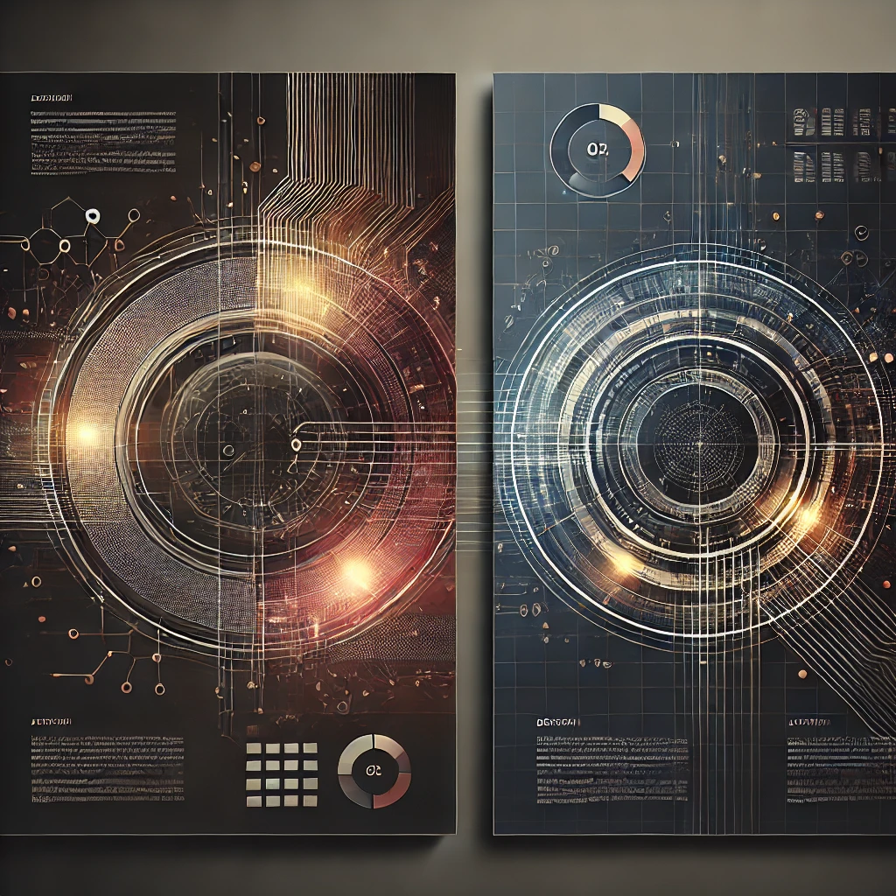

AI-Based Stock Market Sentiment Analysis
A neural network-based tool that analyzes sentiment data from social media to predict stock market fluctuations. This project provides valuable insights for investors, helping them track trends and make informed decisions. I developed the sentiment analysis model and designed the neural network architecture using Python and WEKA.